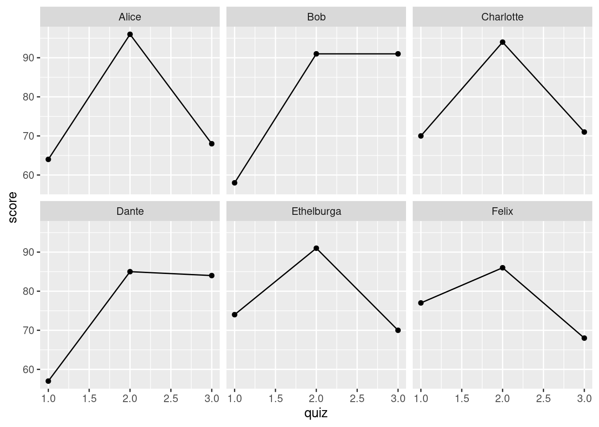
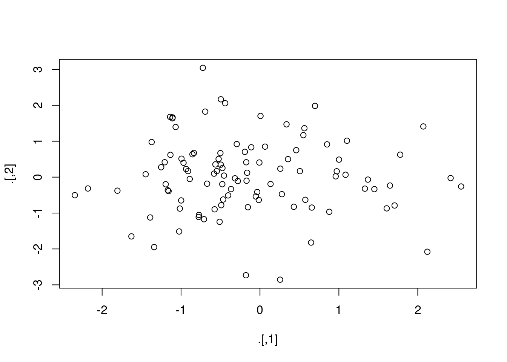

Lesson 8 Data Rodeo

Commander Data from Star Trek TNG in a Western Landscape
By this stage you've read a number of different datasets into R and done a bit of data wrangling with dplyr. Now it's time for a full-fledged data rodeo! This goal of this lesson is to introduce you to more complicated data wrangling issues and more powerful tools to solve them.
8.1 Joins
A common task in data cleaning involves merging or joining datasets from multiple sources. Here's a very simple example. Suppose we have a student gradebook listing quiz scores, exam scores, student names, and student id numbers:
library(tidyverse)
set.seed(92815)
gradebook <- tibble(
student_id = c(192297, 291857, 500286, 449192, 372152, 627561),
name = c('Alice', 'Bob', 'Charlotte', 'Dante', 'Ethelburga', 'Felix'),
quiz1 = round(rnorm(6, 65, 15)),
quiz2 = round(rnorm(6, 88, 5)),
quiz3 = round(rnorm(6, 75, 10)),
midterm1 = round(rnorm(6, 75, 10)),
midterm2 = round(rnorm(6, 80, 8)),
final = round(rnorm(6, 78, 11))
)
gradebook## # A tibble: 6 × 8
## student_id name quiz1 quiz2 quiz3 midterm1 midterm2 final
## <dbl> <chr> <dbl> <dbl> <dbl> <dbl> <dbl> <dbl>
## 1 192297 Alice 64 96 68 81 90 99
## 2 291857 Bob 58 91 91 75 75 79
## 3 500286 Charlotte 70 94 71 81 70 74
## 4 449192 Dante 57 85 84 83 94 83
## 5 372152 Ethelburga 74 91 70 63 73 96
## 6 627561 Felix 77 86 68 78 83 75Unfortunately, gradebook doesn't contain the students' email addresses. This information is contained in another tibble:
email_addresses <- tibble(
student_id = c(101198, 192297, 372152, 918276, 291857),
email = c('unclejoe@whitehouse.gov', 'alice.liddell@chch.ox.ac.uk',
'ethelburga@lyminge.org', 'mzuckerberg@gmail.com',
'microsoftbob@hotmail.com')
)
email_addresses## # A tibble: 5 × 2
## student_id email
## <dbl> <chr>
## 1 101198 unclejoe@whitehouse.gov
## 2 192297 alice.liddell@chch.ox.ac.uk
## 3 372152 ethelburga@lyminge.org
## 4 918276 mzuckerberg@gmail.com
## 5 291857 microsoftbob@hotmail.comBoth gradebook and email_addresses contain a column of student id numbers, unique identifiers for each student in the university. We can use this column to merge the two tibbles via a dplyr mutating join. There are many different kinds of joins, and the right one to use depends on the problem you want to solve. All of the join functions have two required arguments: x and y are the tibbles we want to join. A left_join() returns a tibble with the same number of rows as x, the "left" tibble inside the statement left_joint(x, y). For example, the following command returns a tibble with one row for each student from gradebook:
left_join(gradebook, email_addresses) ## Joining, by = "student_id"## # A tibble: 6 × 9
## student_id name quiz1 quiz2 quiz3 midterm1 midterm2 final email
## <dbl> <chr> <dbl> <dbl> <dbl> <dbl> <dbl> <dbl> <chr>
## 1 192297 Alice 64 96 68 81 90 99 alice.liddell…
## 2 291857 Bob 58 91 91 75 75 79 microsoftbob@…
## 3 500286 Charlotte 70 94 71 81 70 74 <NA>
## 4 449192 Dante 57 85 84 83 94 83 <NA>
## 5 372152 Ethelburga 74 91 70 63 73 96 ethelburga@ly…
## 6 627561 Felix 77 86 68 78 83 75 <NA>Students whose id appears in email_addresses but not in gradebook have been dropped. Students whose id appears in gradebook but not in email_addresses have been retained, but since we don't know their email address, left_join() has filled in an NA.
One of the goals of this book is to help you become comfortable learning new things about R own your own, through a combination of documentation files and internet searches. So rather than telling you how a right_join(), a full_join(), and an inner_join() work, I will ask you to discover this for yourself in the following exercise!
8.1.1 Exercise
- Run the command
right_join(gradebook, email_addresses). What happens? Explain how this command works, consulting the associated help file if needed.
# Result contains students whose ids are in email_addresses. Those with ids
# in gradebook who are *not* in gradebook are dropped.
right_join(gradebook, email_addresses)## Joining, by = "student_id"## # A tibble: 5 × 9
## student_id name quiz1 quiz2 quiz3 midterm1 midterm2 final email
## <dbl> <chr> <dbl> <dbl> <dbl> <dbl> <dbl> <dbl> <chr>
## 1 192297 Alice 64 96 68 81 90 99 alice.liddell…
## 2 291857 Bob 58 91 91 75 75 79 microsoftbob@…
## 3 372152 Ethelburga 74 91 70 63 73 96 ethelburga@ly…
## 4 101198 <NA> NA NA NA NA NA NA unclejoe@whit…
## 5 918276 <NA> NA NA NA NA NA NA mzuckerberg@g…- Run the command
full_join(gradebook, email_addresses). What happens? Explain how this command works, consulting the associated help file if needed.
# Result contains everyone whose id appears in *either* dataset. This
# requires lots of padding out with missing values.
full_join(gradebook, email_addresses)## Joining, by = "student_id"## # A tibble: 8 × 9
## student_id name quiz1 quiz2 quiz3 midterm1 midterm2 final email
## <dbl> <chr> <dbl> <dbl> <dbl> <dbl> <dbl> <dbl> <chr>
## 1 192297 Alice 64 96 68 81 90 99 alice.liddell…
## 2 291857 Bob 58 91 91 75 75 79 microsoftbob@…
## 3 500286 Charlotte 70 94 71 81 70 74 <NA>
## 4 449192 Dante 57 85 84 83 94 83 <NA>
## 5 372152 Ethelburga 74 91 70 63 73 96 ethelburga@ly…
## 6 627561 Felix 77 86 68 78 83 75 <NA>
## 7 101198 <NA> NA NA NA NA NA NA unclejoe@whit…
## 8 918276 <NA> NA NA NA NA NA NA mzuckerberg@g…- Run the command
inner_join(gradebook, email_addresses). What happens? Explain how this command works, consulting the associated help file if needed.
# Result contains only those whose id appears in *both* datasets. Everyone
# else is dropped.
inner_join(gradebook, email_addresses)## Joining, by = "student_id"## # A tibble: 3 × 9
## student_id name quiz1 quiz2 quiz3 midterm1 midterm2 final email
## <dbl> <chr> <dbl> <dbl> <dbl> <dbl> <dbl> <dbl> <chr>
## 1 192297 Alice 64 96 68 81 90 99 alice.liddell…
## 2 291857 Bob 58 91 91 75 75 79 microsoftbob@…
## 3 372152 Ethelburga 74 91 70 63 73 96 ethelburga@ly…- Above I used the command
left_join(gradebook, email_addresses). How could I have achieved the same thing using the pipe%>%?
gradebook %>%
left_join(email_addresses)## Joining, by = "student_id"## # A tibble: 6 × 9
## student_id name quiz1 quiz2 quiz3 midterm1 midterm2 final email
## <dbl> <chr> <dbl> <dbl> <dbl> <dbl> <dbl> <dbl> <chr>
## 1 192297 Alice 64 96 68 81 90 99 alice.liddell…
## 2 291857 Bob 58 91 91 75 75 79 microsoftbob@…
## 3 500286 Charlotte 70 94 71 81 70 74 <NA>
## 4 449192 Dante 57 85 84 83 94 83 <NA>
## 5 372152 Ethelburga 74 91 70 63 73 96 ethelburga@ly…
## 6 627561 Felix 77 86 68 78 83 75 <NA>- Add a column called
nametoemail_addressesthat containsc('Joe', 'Alice', 'Ethelburga', 'Mark', 'Bob'). Then carry out a left join to mergegradebookwithemail_addresses. What happens? Does the result contain two instances ofname? What if you set the argumentby = 'student_id'. Explain, consulting the help file as needed.
email_addresses$name <- c('Joe', 'Alice', 'Ethelburga', 'Mark', 'Bob')
left_join(gradebook, email_addresses)## Joining, by = c("student_id", "name")## # A tibble: 6 × 9
## student_id name quiz1 quiz2 quiz3 midterm1 midterm2 final email
## <dbl> <chr> <dbl> <dbl> <dbl> <dbl> <dbl> <dbl> <chr>
## 1 192297 Alice 64 96 68 81 90 99 alice.liddell…
## 2 291857 Bob 58 91 91 75 75 79 microsoftbob@…
## 3 500286 Charlotte 70 94 71 81 70 74 <NA>
## 4 449192 Dante 57 85 84 83 94 83 <NA>
## 5 372152 Ethelburga 74 91 70 63 73 96 ethelburga@ly…
## 6 627561 Felix 77 86 68 78 83 75 <NA>left_join(gradebook, email_addresses, by = 'student_id')## # A tibble: 6 × 10
## student_id name.x quiz1 quiz2 quiz3 midterm1 midterm2 final email name.y
## <dbl> <chr> <dbl> <dbl> <dbl> <dbl> <dbl> <dbl> <chr> <chr>
## 1 192297 Alice 64 96 68 81 90 99 alice.… Alice
## 2 291857 Bob 58 91 91 75 75 79 micros… Bob
## 3 500286 Charlotte 70 94 71 81 70 74 <NA> <NA>
## 4 449192 Dante 57 85 84 83 94 83 <NA> <NA>
## 5 372152 Ethelburga 74 91 70 63 73 96 ethelb… Ethel…
## 6 627561 Felix 77 86 68 78 83 75 <NA> <NA>8.2 tidyselect
The dplyr package provides a very helpful collection of operators and functions that fall under the rubric of tidyselect. Thus far we've always specified columns within select() by writing their names in full. This is perfectly fine in small examples, but when you start working with large and complicated datasets, it quickly becomes unwieldy. The purpose of tidyselect is to make selection easier, faster, and more flexible. Here we'll explore a few common use cases. For more details see the dplyr documentation.
Let's take a look at my gradebook:
gradebook## # A tibble: 6 × 8
## student_id name quiz1 quiz2 quiz3 midterm1 midterm2 final
## <dbl> <chr> <dbl> <dbl> <dbl> <dbl> <dbl> <dbl>
## 1 192297 Alice 64 96 68 81 90 99
## 2 291857 Bob 58 91 91 75 75 79
## 3 500286 Charlotte 70 94 71 81 70 74
## 4 449192 Dante 57 85 84 83 94 83
## 5 372152 Ethelburga 74 91 70 63 73 96
## 6 627561 Felix 77 86 68 78 83 75As you can see, there were three quizzes: quiz1, quiz2, and quiz3. If I wanted to select only these columns, I could do so as follows:
gradebook %>%
select(quiz1, quiz2, quiz3)## # A tibble: 6 × 3
## quiz1 quiz2 quiz3
## <dbl> <dbl> <dbl>
## 1 64 96 68
## 2 58 91 91
## 3 70 94 71
## 4 57 85 84
## 5 74 91 70
## 6 77 86 68Easy enough.
But I used to teach a course called Econ 103 that had eleven quizzes! Not only would it be a pain to type out quiz01 all the way up to quiz11, but I could easily make a mistake and leave one one. Enter the dplyr "selection helper" starts_with(). The columns I want to select here all begin with a common prefix, namely quiz. I can exploit this fact to select them as follows:
gradebook %>%
select(starts_with('quiz'))## # A tibble: 6 × 3
## quiz1 quiz2 quiz3
## <dbl> <dbl> <dbl>
## 1 64 96 68
## 2 58 91 91
## 3 70 94 71
## 4 57 85 84
## 5 74 91 70
## 6 77 86 68The selection helpers ends_with() and contains() work similarly: you can use them to select columns with a common suffix or columns that contain a particular literal string:
gradebook %>%
select(ends_with('2'))## # A tibble: 6 × 2
## quiz2 midterm2
## <dbl> <dbl>
## 1 96 90
## 2 91 75
## 3 94 70
## 4 85 94
## 5 91 73
## 6 86 83gradebook %>%
select(contains('iz'))## # A tibble: 6 × 3
## quiz1 quiz2 quiz3
## <dbl> <dbl> <dbl>
## 1 64 96 68
## 2 58 91 91
## 3 70 94 71
## 4 57 85 84
## 5 74 91 70
## 6 77 86 68Back when I used to give eleven quizzes in a single semester, I could really have benefitted from the num_range() selection helper. This selection helper allows us to specify both a prefix, like starts_with() and a numeric range, i.e. a sequence of integers. For example, I could select quizzes two and three as follows:
gradebook %>%
select(num_range('quiz', 2:3))## # A tibble: 6 × 2
## quiz2 quiz3
## <dbl> <dbl>
## 1 96 68
## 2 91 91
## 3 94 71
## 4 85 84
## 5 91 70
## 6 86 68If you know regular expressions you'll want to check out the selection helper matches(). For more information on starts_with() and its friends and relations see the tidyselect documentation
Another extremely helpful tidyselect helper is where(). This function accepts a function as its input. It then applies this function to every column of the tibble and returns the columns for which the function evaluates to TRUE. A common use case of where() is to select columns by their type. For example, we could select only the numeric columns of the gradebook as follows:
gradebook %>%
select(where(is.numeric))## # A tibble: 6 × 7
## student_id quiz1 quiz2 quiz3 midterm1 midterm2 final
## <dbl> <dbl> <dbl> <dbl> <dbl> <dbl> <dbl>
## 1 192297 64 96 68 81 90 99
## 2 291857 58 91 91 75 75 79
## 3 500286 70 94 71 81 70 74
## 4 449192 57 85 84 83 94 83
## 5 372152 74 91 70 63 73 96
## 6 627561 77 86 68 78 83 758.2.1 Exercise
- Use
ends_with()to select the columnsquiz2andmidterm2fromgradebookwith a minimum of typing.
gradebook %>%
select(ends_with('2'))## # A tibble: 6 × 2
## quiz2 midterm2
## <dbl> <dbl>
## 1 96 90
## 2 91 75
## 3 94 70
## 4 85 94
## 5 91 73
## 6 86 83- Use the function
contains()to select the columns whose names contain the abbreviation for "Empirical Research Methods."
gradebook %>%
select(contains('erm'))## # A tibble: 6 × 2
## midterm1 midterm2
## <dbl> <dbl>
## 1 81 90
## 2 75 75
## 3 81 70
## 4 83 94
## 5 63 73
## 6 78 83- The
dplyrpackage includes a built-in dataset calledstarwars. Use theglimpse()function to get a quick overview of this dataset, and then read the associated help file before answering the following questions.- Select only the columns of
starwarsthat contain character data. - Select only the columns of
starwarsthat contain an underscore. - Select only the columns of
starwarsthat are either numeric or whose names end with "color".
- Select only the columns of
starwars %>%
select(where(is.character))## # A tibble: 87 × 8
## name hair_color skin_color eye_color sex gender homeworld species
## <chr> <chr> <chr> <chr> <chr> <chr> <chr> <chr>
## 1 Luke Skywalker blond fair blue male mascu… Tatooine Human
## 2 C-3PO <NA> gold yellow none mascu… Tatooine Droid
## 3 R2-D2 <NA> white, bl… red none mascu… Naboo Droid
## 4 Darth Vader none white yellow male mascu… Tatooine Human
## 5 Leia Organa brown light brown fema… femin… Alderaan Human
## 6 Owen Lars brown, gr… light blue male mascu… Tatooine Human
## 7 Beru Whitesun… brown light blue fema… femin… Tatooine Human
## 8 R5-D4 <NA> white, red red none mascu… Tatooine Droid
## 9 Biggs Darklig… black light brown male mascu… Tatooine Human
## 10 Obi-Wan Kenobi auburn, w… fair blue-gray male mascu… Stewjon Human
## # … with 77 more rowsstarwars %>%
select(contains('_'))## # A tibble: 87 × 4
## hair_color skin_color eye_color birth_year
## <chr> <chr> <chr> <dbl>
## 1 blond fair blue 19
## 2 <NA> gold yellow 112
## 3 <NA> white, blue red 33
## 4 none white yellow 41.9
## 5 brown light brown 19
## 6 brown, grey light blue 52
## 7 brown light blue 47
## 8 <NA> white, red red NA
## 9 black light brown 24
## 10 auburn, white fair blue-gray 57
## # … with 77 more rowsstarwars %>%
select(ends_with('color') | where(is.numeric))## # A tibble: 87 × 6
## hair_color skin_color eye_color height mass birth_year
## <chr> <chr> <chr> <int> <dbl> <dbl>
## 1 blond fair blue 172 77 19
## 2 <NA> gold yellow 167 75 112
## 3 <NA> white, blue red 96 32 33
## 4 none white yellow 202 136 41.9
## 5 brown light brown 150 49 19
## 6 brown, grey light blue 178 120 52
## 7 brown light blue 165 75 47
## 8 <NA> white, red red 97 32 NA
## 9 black light brown 183 84 24
## 10 auburn, white fair blue-gray 182 77 57
## # … with 77 more rows8.3 Column-wise Operations with across()
Students are often eager to know how well everyone else did on a particular assignment. Using what we know about dplyr, it's easy to compute the average score on each of the quizzes in gradebook:
gradebook %>%
summarize(quiz1_avg = mean(quiz1),
quiz2_avg = mean(quiz2),
quiz3_avg = mean(quiz3)) ## # A tibble: 1 × 3
## quiz1_avg quiz2_avg quiz3_avg
## <dbl> <dbl> <dbl>
## 1 66.7 90.5 75.3But now suppose we wanted to do this for eleven quizzes. Or suppose that we wanted to compute both means and standard deviations. That would involve quite a lot of typing, introducing plenty of room for error. To avoid the tedium, and the risk of student complaints about inaccurate summary statistics, we'll rely on column-wise operations using the dplyr function across(). Here's how it can be used to solve the quiz average problem from above:
# The easy way!
gradebook %>%
summarize(across(starts_with('quiz'), mean, .names = '{.col}_avg'))## # A tibble: 1 × 3
## quiz1_avg quiz2_avg quiz3_avg
## <dbl> <dbl> <dbl>
## 1 66.7 90.5 75.3Let's unpack the preceding command. The first argument to across() is .cols. This specifies the columns that we want to work with. We can either type them out directly as a vector of strings, e.g. c('col1name', 'col2name') or use any of the tidyselect operations introduced above. In the example from above, I specified that I wanted to work with the columns quiz1, quiz2, and quiz2 by using starts_with('quiz'). The second argument of across() is .fns. This specifies the function or functions that we will use to operate on each column that we've selected. Here I specified mean to refer to the base R function mean(). The third argument of across(), .names(), is optional but comes in handy. It allows us to set a rule for automatically constructing names for the transformed columns. The syntax comes from the glue package. In my example from above, {.col} means "the name of a particular column." So we're instructing across() to take the name of each column that starts with quiz, compute its mean() and call the result [COLUMN NAME]_avg.
The function across() is most often used in concert with summarize() or mutate(). We've already seen an example with summarize(), namely computing summary statistics for a particular group of columns and automatically naming the results. Here's an example that uses mutate() to convert quiz1, quiz2, and quiz3 to z-scores by subtracting the sample mean of each column and dividing by the sample standard deviation. Notice that in this case I supply a function that I have created myself
zscore <- function(x) {
(x - mean(x, na.rm = TRUE)) / sd(x, na.rm = TRUE)
}
gradebook %>%
mutate(across(starts_with('quiz'), zscore, .names = '{.col}_zscore')) %>%
select(ends_with('zscore'))## # A tibble: 6 × 3
## quiz1_zscore quiz2_zscore quiz3_zscore
## <dbl> <dbl> <dbl>
## 1 -0.320 1.27 -0.752
## 2 -1.04 0.116 1.61
## 3 0.400 0.809 -0.444
## 4 -1.16 -1.27 0.889
## 5 0.880 0.116 -0.547
## 6 1.24 -1.04 -0.752We could alternatively have specified the z-score function using purrr style syntax as follows:
gradebook %>%
mutate(across(starts_with('quiz'),
~ (.x - mean(.x, na.rm = TRUE)) / sd(.x, na.rm = TRUE),
.names = '{.col}_zscore')) %>%
select(ends_with('zscore'))## # A tibble: 6 × 3
## quiz1_zscore quiz2_zscore quiz3_zscore
## <dbl> <dbl> <dbl>
## 1 -0.320 1.27 -0.752
## 2 -1.04 0.116 1.61
## 3 0.400 0.809 -0.444
## 4 -1.16 -1.27 0.889
## 5 0.880 0.116 -0.547
## 6 1.24 -1.04 -0.752Without getting too deep into the weeds, purrr style syntax uses .x to refer to the function argument and ~ to indicate that everything to the right constitutes a function definition.
Both the .fns and .names arguments of across() accept a list in place of a single function or name. Suppose for example that we wanted to compute the mean and variance of the two midterm exams. We could do so as follows:
mean_var <- list(
mean = ~ mean(.x, na.rm = TRUE),
var = ~ var(.x, na.rm = TRUE)
)
gradebook %>%
summarize(across(starts_with('midterm'), mean_var, .names = '{.col}_{.fn}'))## # A tibble: 1 × 4
## midterm1_mean midterm1_var midterm2_mean midterm2_var
## <dbl> <dbl> <dbl> <dbl>
## 1 76.8 53.8 80.8 95.0If you prefer not to use the purrr style syntax, this also works:
mean_var2 <- list(
mean = function(x) mean(x, na.rm = TRUE),
var = function(x) var(x, na.rm = TRUE)
)
gradebook %>%
summarize(across(starts_with('midterm'), mean_var2, .names = '{.col}_{.fn}'))## # A tibble: 1 × 4
## midterm1_mean midterm1_var midterm2_mean midterm2_var
## <dbl> <dbl> <dbl> <dbl>
## 1 76.8 53.8 80.8 95.0Regardless of which version you prefer, notice how setting .names equal to '{.col}_{.fn}' has instructed across() to pull out the names from the list mean_var (or mean_var2), and combine them with the original column names that start with "midterm" to generate the column names for our table of summary statistics:
names(mean_var)## [1] "mean" "var"names(mean_var2)## [1] "mean" "var"8.3.1 Exercise
- Create a table of sample standard deviations for each of the quizzes in
gradebook, where the columns are named according to[COLUMN NAME]_sd.
gradebook %>%
summarize(across(starts_with('quiz'), sd, .names = '{.col}_sd'))## # A tibble: 1 × 3
## quiz1_sd quiz2_sd quiz3_sd
## <dbl> <dbl> <dbl>
## 1 8.33 4.32 9.75- Read the help file for the function
n_distinct()indplyr. What does it do? After you understand how it works, use it to count up the number of distinct values in each column ofstarwarsthat contains character data. Name your results according ton_[COLUMN NAME]s.
starwars %>%
summarize(across(where(is.character), n_distinct, .names = 'n_{.col}s'))## # A tibble: 1 × 8
## n_names n_hair_colors n_skin_colors n_eye_colors n_sexs n_genders n_homeworlds
## <int> <int> <int> <int> <int> <int> <int>
## 1 87 13 31 15 5 3 49
## # … with 1 more variable: n_speciess <int>- Read the help file for the
dplyrfunctionn(). After you understand how this function works, combine it withacross()and otherdplyrfunctions you have learned to display the following table. Each row should correspond to ahomeworldthat occurs at least twice in thestarwarstibble. There should be three columns, counting up the number of distinct values ofsex,species, andeye_color. What happens to the observations for whichhomeworldis missing?
starwars %>%
group_by(homeworld) %>%
filter(n() > 1) %>%
summarize(across(c(sex, species, eye_color), n_distinct))## # A tibble: 10 × 4
## homeworld sex species eye_color
## <chr> <int> <int> <int>
## 1 Alderaan 2 1 1
## 2 Corellia 1 1 2
## 3 Coruscant 2 2 1
## 4 Kamino 2 2 2
## 5 Kashyyyk 1 1 1
## 6 Mirial 1 1 1
## 7 Naboo 4 4 5
## 8 Ryloth 2 1 2
## 9 Tatooine 3 2 4
## 10 <NA> 4 4 8- For each
specieswith at least two observations, calculate the sample median of all the numeric columns instarwars, dropping any missing observations. Why do we obtain the result that we do for members of the "Kaminoan" species?
starwars %>%
group_by(species) %>%
filter(n() > 1) %>%
summarize(across(where(is.numeric), ~ median(.x, na.rm = TRUE)))## # A tibble: 9 × 4
## species height mass birth_year
## <chr> <dbl> <dbl> <dbl>
## 1 Droid 97 53.5 33
## 2 Gungan 206 74 52
## 3 Human 180 79 48
## 4 Kaminoan 221 88 NA
## 5 Mirialan 168 53.1 49
## 6 Twi'lek 179 55 48
## 7 Wookiee 231 124 200
## 8 Zabrak 173 80 54
## 9 <NA> 183 48 62starwars %>%
filter(species == 'Kaminoan')## # A tibble: 2 × 14
## name height mass hair_color skin_color eye_color birth_year sex gender
## <chr> <int> <dbl> <chr> <chr> <chr> <dbl> <chr> <chr>
## 1 Lama Su 229 88 none grey black NA male mascul…
## 2 Taun We 213 NA none grey black NA female femini…
## # … with 5 more variables: homeworld <chr>, species <chr>, films <list>,
## # vehicles <list>, starships <list>- Calculate the standard deviation and interquartile range all the numeric columns of
starwars, dropping any missing observations. Attach meaningful names to your results so they're easy to read and understand. Hint: there's an R function for the interquartile range so you don't need to program it yourself.
SD_IQR <- list(
SD = ~ sd(.x, na.rm = TRUE),
IQR = ~ IQR(.x, na.rm = TRUE)
)
starwars %>%
summarize(across(where(is.numeric), SD_IQR, .names = '{.col}_{.fn}'))## # A tibble: 1 × 6
## height_SD height_IQR mass_SD mass_IQR birth_year_SD birth_year_IQR
## <dbl> <dbl> <dbl> <dbl> <dbl> <dbl>
## 1 34.8 24 169. 28.9 155. 378.4 Row-wise operations
In the aforementioned course with eleven quizzes, my policy was to drop each student's two lowest quiz scores when calculating her overall "quiz average." In the hypothetical gradebook from above there are only three quizzes, so we'll have to be a bit less generous. Suppose we want to drop each student's single lowest quiz score. Given a vector of quizzes for an individual student, it's fairly easy to implement this in an R function:
drop1_avg <- function(scores){
# Calculate the mean of scores dropping the lowest value
scores <- sort(scores)
highest_scores <- scores[-1]
mean(highest_scores)
}
# Test that it works as expected
all.equal(drop1_avg(c(95, 83, 91)), mean(c(95, 91)))## [1] TRUEIt seems like there should be a way to use drop1_avg() to compute the quiz average of each student in gradebook, dropping his or her lowest quiz score. Here's what I think many people would try:
gradebook %>%
mutate(quiz_avg = drop1_avg(c(quiz1, quiz2, quiz3))) %>%
select(name, quiz_avg)## # A tibble: 6 × 2
## name quiz_avg
## <chr> <dbl>
## 1 Alice 78.7
## 2 Bob 78.7
## 3 Charlotte 78.7
## 4 Dante 78.7
## 5 Ethelburga 78.7
## 6 Felix 78.7But this is clearly wrong: it's not true that every student has the same quiz average! We've had lots of experience applying functions to all the observations in a particular column, but here we need to work with multiple observations in a give row. To solve this problem, we rely on the dplyr function rowwise().
8.4.1 rowwise()
To understand rowwise() it helps to recall a dplyr function we're already familiar with: group_by(). On its own, group_by() is useless. It doesn't compute summary statistics, generate new columns, filter out observations, or reorder them. Instead it changes the behavior of the other dplyr functions like select(), filter(), summarize(), mutate(), and arrange(). When we write
starwars %>%
group_by(gender) %>%
summarize(avg_height = mean(height, na.rm = TRUE))## # A tibble: 3 × 2
## gender avg_height
## <chr> <dbl>
## 1 feminine 165.
## 2 masculine 177.
## 3 <NA> 181.the group_by(gender) statement passes information to summarize() telling it to override its usual behavior, which would in this case be to compute the mean height of all observations, and instead to compute separate means for groups defined by the values of gender.
If you understand this nuance about group_by() you're primed and ready for rowwise(). Both of these commands tell dplyr to group particular observations together when executing the steps that follow. With rowwise(), the observations in the group are taken from a single row of our dataset. Here's how we can solve my quiz average problem from above using row-wise operations:
gradebook %>%
rowwise() %>%
mutate(quiz_avg = drop1_avg(c(quiz1, quiz2, quiz3))) %>%
select(name, quiz_avg)## # A tibble: 6 × 2
## # Rowwise:
## name quiz_avg
## <chr> <dbl>
## 1 Alice 82
## 2 Bob 91
## 3 Charlotte 82.5
## 4 Dante 84.5
## 5 Ethelburga 82.5
## 6 Felix 81.5Behind the scenes, R is in effect looping over every row of gradebook(), pulling out the values of quiz1, quiz2, and quiz3, concatenating them into a vector with c() and then feeding them into our function drop1_avg() from above. While you could write such a loop yourself, the nice thing is that you don't have to: dplyr allows us to focus on the description of the task we want to achieve without specifying the details of how that task should be implemented.
8.4.2 c_across()
Now that you've tasted the sweet, sweet nectar of tidyselect, you may find the preceding code a bit inelegant. What if I had eleven quizzes? I certainly wouldn't want to type out the following:
drop1_avg(c(quiz01, quiz02, quiz03, quiz04, quiz05, quiz06, quiz07,
quiz09, quiz10, quiz11))(By the way, did you spot the error that I inserted intentionally?) You will be pleased to learn that everything you've learned about tidyselect carries over to row-wise operations: all you need to do is enclose your tidy selection operations within the function c_across(). For example, replacing c() and an explicit listing of column names with c_across() allows us to solve the quiz average problem as follows:
gradebook %>%
rowwise() %>%
mutate(quiz_avg = drop1_avg(c_across(starts_with('quiz')))) %>%
select(name, quiz_avg)## # A tibble: 6 × 2
## # Rowwise:
## name quiz_avg
## <chr> <dbl>
## 1 Alice 82
## 2 Bob 91
## 3 Charlotte 82.5
## 4 Dante 84.5
## 5 Ethelburga 82.5
## 6 Felix 81.58.4.3 across() as an alternative to rowwise()
As mentioned above, row-wise operations in dplyr are essentially for loops in disguise. And as a general rule, loops written in R are considerably slower than purpose-built "vectorized" functions that call FORTRAN/C/C++ to do the heavy lifting. Sometimes we should simply acknowledge this cost and pay it: better to write clear code that's a bit slower than to write unclear code that's a bit faster. But sometimes speed is too important to compromise. In these situations a useful approach is to search for an R function that operates on many rows at once and use across() instead of row_wise() combined with c_across().
Suppose for example that we wanted to compute a quiz average without dropping any quizzes. We could easily solve this problem using row-wise operations, but if our tibble is very large this solution will be somewhat slow. An alternative uses the base R function rowMeans(). Given a matrix, data frame, or tibble x this function computes the mean of each row without the need for any looping within R. We can use it to solve the simplified quiz average problem as follows:
gradebook %>%
mutate(quiz_avg = rowMeans(across(starts_with('quiz')))) %>%
select(name, quiz_avg)## # A tibble: 6 × 2
## name quiz_avg
## <chr> <dbl>
## 1 Alice 76
## 2 Bob 80
## 3 Charlotte 78.3
## 4 Dante 75.3
## 5 Ethelburga 78.3
## 6 Felix 77Like c_across(), across() allows you to use all of your favorite tidyselect operations. The key difference is that across() does not pull out rows one at a time. Instead it extracts all the rows from the columns whose names start with quiz in one big block, and feeds them into the function rowMeans(). From here, rowMeans() takes over. When it's finished, mutate() attaches the result to gradebook in a column called quiz_avg.
8.4.4 ungroup()
Both rowwise() and group_by() tell the other dplyr verbs that follow them to operate on particular groups rather than whole columns. But what if you want to tell dplyr to switch back to its "default" behavior? How could we say "hey stop working on rows now!" This may seem a bit abstract, so let's look at an example. Suppose that after creating my column quiz_avg, a within student average, I wanted to see how both average quiz scores and final exam scores varied across students. Here's what you might think to try:
gradebook %>%
rowwise() %>%
mutate(quiz_avg = drop1_avg(c_across(starts_with('quiz')))) %>%
summarize(mean(quiz_avg), mean(final))## # A tibble: 6 × 2
## `mean(quiz_avg)` `mean(final)`
## <dbl> <dbl>
## 1 82 99
## 2 91 79
## 3 82.5 74
## 4 84.5 83
## 5 82.5 96
## 6 81.5 75But it didn't work! The problem is that dplyr is still in row-wise mode. We need to tell it to leave row-wise mode and go back to working as normal. To do this, we insert the command ungroup() at the desired point in our pipeline:
gradebook %>%
rowwise() %>%
mutate(quiz_avg = drop1_avg(c_across(starts_with('quiz')))) %>%
ungroup() %>%
summarize(mean(quiz_avg), mean(final))## # A tibble: 1 × 2
## `mean(quiz_avg)` `mean(final)`
## <dbl> <dbl>
## 1 84 84.3In the same way, we can use ungroup() to "return to normal" after a group_by() step. It's often a good idea to add an ungroup() statement to the end of a pipeline that uses group_by(), particularly if you're storing the results for later use. This way the next set of dplyr operations that you carry out will work in the "usual" way.
8.4.5 Exercise
Suppose we wanted to calculate each student's maximum quiz score and store it in a column called quiz_max. Write code to accomplish this using row-wise operations.
gradebook %>%
rowwise() %>%
mutate(quiz_max = max(c_across(starts_with('quiz')))) %>%
ungroup() %>%
select(student_id, name, quiz_max)## # A tibble: 6 × 3
## student_id name quiz_max
## <dbl> <chr> <dbl>
## 1 192297 Alice 96
## 2 291857 Bob 91
## 3 500286 Charlotte 94
## 4 449192 Dante 85
## 5 372152 Ethelburga 91
## 6 627561 Felix 868.5 Pivoting: From Wider to Longer and Back Again
Sometimes it's helpful or even essential to reshape a dataset before making a plot or carrying out an analysis, a task that is sometimes called pivoting.
The tidyr functions pivot_wider() and pivot_longer() make pivoting easy. It's a bit challenging to explain what pivoting means in the abstract, so in this section we'll explore some simple examples. After you understand the basic idea, you shouldn't have much trouble recognizing when you should think about pivoting. For more details, see the documentation for pivot_longer() and pivot_wider() and this article on pivoting.
8.5.1 pivot_longer()
Suppose we wanted to make a time series plot of quiz scores for each student in gradebook.
It seems like we should be able to do this in ggplot2, but it's not clear how. This kind of plot asks us to view the quiz scores in gradebook as a panel dataset, a sequence of observations of the same individual made over time, but the way that I've arranged the information in gradebook doesn't reflect this structure. To make this look like a panel dataset, we need to increase the number of rows so that each student appears multiple times, once for every quiz. We can accomplish this using the function pivot_longer():
gradebook %>%
pivot_longer(starts_with('quiz'), names_to = 'quiz', values_to = 'score') %>%
select(student_id, name, quiz, score)## # A tibble: 18 × 4
## student_id name quiz score
## <dbl> <chr> <chr> <dbl>
## 1 192297 Alice quiz1 64
## 2 192297 Alice quiz2 96
## 3 192297 Alice quiz3 68
## 4 291857 Bob quiz1 58
## 5 291857 Bob quiz2 91
## 6 291857 Bob quiz3 91
## 7 500286 Charlotte quiz1 70
## 8 500286 Charlotte quiz2 94
## 9 500286 Charlotte quiz3 71
## 10 449192 Dante quiz1 57
## 11 449192 Dante quiz2 85
## 12 449192 Dante quiz3 84
## 13 372152 Ethelburga quiz1 74
## 14 372152 Ethelburga quiz2 91
## 15 372152 Ethelburga quiz3 70
## 16 627561 Felix quiz1 77
## 17 627561 Felix quiz2 86
## 18 627561 Felix quiz3 68The first argument to pivot_longer(), data, is the tibble that we want to pivot. Here we supply this argument using the pipe %>%. The second argument, cols, specifies which columns we want to pivot. Here I use a tidyselect helper to choose the columns that contain quiz scores. The third argument, names_to, tells pivot_longer() how to handle the column names from cols. We need to keep track of these, since they correspond to the "time periods" in our panel. What pivot_longer() does is create a new column to store the names. Using names_to we can specify the name for this new column. I've chosen to call it quiz. Similarly, values_to is where we specify the name of the column in which pivot_longer() will store the values that it's extracted from cols. If this all sounds a bit abstract, focus on the example: we've gone from having three separate columns quiz1, quiz2, and quiz3 to having two columns quiz and score. Before, our tibble had as many rows as students; now it has three times as many rows, one for each combination of student and quiz.
In this particular situation, it might be a bit nicer to store simply 1, 2, and 3 rather than quiz1, quiz2, and quiz3 in the column quiz. An easy way to do this is by setting the optional argument names_prefix to 'quiz'. This will strip out the string 'quiz' during the pivot:
gradebook %>%
pivot_longer(starts_with('quiz'),
names_to = 'quiz',
names_prefix = 'quiz',
values_to = 'score') %>%
select(student_id, name, quiz, score)## # A tibble: 18 × 4
## student_id name quiz score
## <dbl> <chr> <chr> <dbl>
## 1 192297 Alice 1 64
## 2 192297 Alice 2 96
## 3 192297 Alice 3 68
## 4 291857 Bob 1 58
## 5 291857 Bob 2 91
## 6 291857 Bob 3 91
## 7 500286 Charlotte 1 70
## 8 500286 Charlotte 2 94
## 9 500286 Charlotte 3 71
## 10 449192 Dante 1 57
## 11 449192 Dante 2 85
## 12 449192 Dante 3 84
## 13 372152 Ethelburga 1 74
## 14 372152 Ethelburga 2 91
## 15 372152 Ethelburga 3 70
## 16 627561 Felix 1 77
## 17 627561 Felix 2 86
## 18 627561 Felix 3 68This is almost exactly what we want. But if you look closely at the above output, you'll notice that quiz is stored as character data. We could easily change this with a mutate() command combined with as.numeric(), but there's a slicker approach: we can set the optional argument names_transform to carry out any transformation of the names that we like, for example
gradebook %>%
pivot_longer(starts_with('quiz'),
names_to = 'quiz',
names_prefix = 'quiz',
names_transform = list(quiz = as.numeric),
values_to = 'score') %>%
select(student_id, name, quiz, score)## # A tibble: 18 × 4
## student_id name quiz score
## <dbl> <chr> <dbl> <dbl>
## 1 192297 Alice 1 64
## 2 192297 Alice 2 96
## 3 192297 Alice 3 68
## 4 291857 Bob 1 58
## 5 291857 Bob 2 91
## 6 291857 Bob 3 91
## 7 500286 Charlotte 1 70
## 8 500286 Charlotte 2 94
## 9 500286 Charlotte 3 71
## 10 449192 Dante 1 57
## 11 449192 Dante 2 85
## 12 449192 Dante 3 84
## 13 372152 Ethelburga 1 74
## 14 372152 Ethelburga 2 91
## 15 372152 Ethelburga 3 70
## 16 627561 Felix 1 77
## 17 627561 Felix 2 86
## 18 627561 Felix 3 68And now we're finally ready to make the plot we set out to produce:
gradebook %>%
pivot_longer(starts_with('quiz'),
names_to = 'quiz',
names_prefix = 'quiz',
names_transform = list(quiz = as.numeric),
values_to = 'score') %>%
select(student_id, name, quiz, score) %>%
ggplot(aes(x = quiz, y = score)) +
geom_line() +
geom_point() +
facet_wrap(~ name)
8.5.2 pivot_wider()
In effect, pivot_wider() and pivot_longer() are inverse functions; what the one does, the other undoes. Whereas pivot_longer() creates a tibble with more rows, pivot_wider() creates one with fewer rows. Just in case you're still not sick of my gradebook example let's revisit it one final time.
Suppose that, as the course TA, your job is to maintain a record of all the quiz scores. You've stored them in a tibble called quiz_scores
quiz_scores <- gradebook %>%
pivot_longer(starts_with('quiz'),
names_to = 'quiz',
names_prefix = 'quiz',
names_transform = list(quiz = as.numeric),
values_to = 'score') %>%
select(student_id, name, quiz, score)Your boss, the course instructor, maintains a separate tibble called exam_scores. This one is arranged in a completely different way:
exam_scores <- gradebook %>%
select(student_id, name, midterm1, midterm2, final)
exam_scores## # A tibble: 6 × 5
## student_id name midterm1 midterm2 final
## <dbl> <chr> <dbl> <dbl> <dbl>
## 1 192297 Alice 81 90 99
## 2 291857 Bob 75 75 79
## 3 500286 Charlotte 81 70 74
## 4 449192 Dante 83 94 83
## 5 372152 Ethelburga 63 73 96
## 6 627561 Felix 78 83 75Once the course is finished, these two tibbles need to be merged to create a final grade for each student. As the lowly TA, you have to defer to the wishes of your boss, who wants you to supply the quiz scores in a format that matches that of exam_scores. You are asked to provide a tibble with columns student_id, name, quiz1, quiz2, and quiz3. Rather than re-typing all of the quiz scores, you consult the tidyr documentation and discover that there's a fantastic tool called pivot_wider() that can do all the work for you:
quiz_scores %>%
pivot_wider(names_from = quiz, names_prefix = 'quiz', values_from = score)## # A tibble: 6 × 5
## student_id name quiz1 quiz2 quiz3
## <dbl> <chr> <dbl> <dbl> <dbl>
## 1 192297 Alice 64 96 68
## 2 291857 Bob 58 91 91
## 3 500286 Charlotte 70 94 71
## 4 449192 Dante 57 85 84
## 5 372152 Ethelburga 74 91 70
## 6 627561 Felix 77 86 68The names_from and values_from arguments of pivot_wider() are precisely the opposite of the names_to and values_to arguments of pivot_longer(). Similarly, when specified as an argument to pivot_longer(), names_prefix is the prefix we want to remove; when specified as an argument to pivot_wider() it is the prefix we want to add. Without it, our column names would have been 1, 2, and 3 in the preceding example:
quiz_scores %>%
pivot_wider(names_from = quiz, values_from = score)## # A tibble: 6 × 5
## student_id name `1` `2` `3`
## <dbl> <chr> <dbl> <dbl> <dbl>
## 1 192297 Alice 64 96 68
## 2 291857 Bob 58 91 91
## 3 500286 Charlotte 70 94 71
## 4 449192 Dante 57 85 84
## 5 372152 Ethelburga 74 91 70
## 6 627561 Felix 77 86 688.5.3 Exercise
- Read the documentation file for the dataset
billboardfromtidyr. Then usepivot_longer()to convert this tibble into a "panel data layout," as we did with the gradebook example from above.
billboard## # A tibble: 317 × 79
## artist track date.entered wk1 wk2 wk3 wk4 wk5 wk6 wk7 wk8
## <chr> <chr> <date> <dbl> <dbl> <dbl> <dbl> <dbl> <dbl> <dbl> <dbl>
## 1 2 Pac Baby… 2000-02-26 87 82 72 77 87 94 99 NA
## 2 2Ge+her The … 2000-09-02 91 87 92 NA NA NA NA NA
## 3 3 Doors D… Kryp… 2000-04-08 81 70 68 67 66 57 54 53
## 4 3 Doors D… Loser 2000-10-21 76 76 72 69 67 65 55 59
## 5 504 Boyz Wobb… 2000-04-15 57 34 25 17 17 31 36 49
## 6 98^0 Give… 2000-08-19 51 39 34 26 26 19 2 2
## 7 A*Teens Danc… 2000-07-08 97 97 96 95 100 NA NA NA
## 8 Aaliyah I Do… 2000-01-29 84 62 51 41 38 35 35 38
## 9 Aaliyah Try … 2000-03-18 59 53 38 28 21 18 16 14
## 10 Adams, Yo… Open… 2000-08-26 76 76 74 69 68 67 61 58
## # … with 307 more rows, and 68 more variables: wk9 <dbl>, wk10 <dbl>,
## # wk11 <dbl>, wk12 <dbl>, wk13 <dbl>, wk14 <dbl>, wk15 <dbl>, wk16 <dbl>,
## # wk17 <dbl>, wk18 <dbl>, wk19 <dbl>, wk20 <dbl>, wk21 <dbl>, wk22 <dbl>,
## # wk23 <dbl>, wk24 <dbl>, wk25 <dbl>, wk26 <dbl>, wk27 <dbl>, wk28 <dbl>,
## # wk29 <dbl>, wk30 <dbl>, wk31 <dbl>, wk32 <dbl>, wk33 <dbl>, wk34 <dbl>,
## # wk35 <dbl>, wk36 <dbl>, wk37 <dbl>, wk38 <dbl>, wk39 <dbl>, wk40 <dbl>,
## # wk41 <dbl>, wk42 <dbl>, wk43 <dbl>, wk44 <dbl>, wk45 <dbl>, wk46 <dbl>, …billboard %>% pivot_longer(cols = starts_with('wk'),
names_to = 'week',
values_to = 'rank')## # A tibble: 24,092 × 5
## artist track date.entered week rank
## <chr> <chr> <date> <chr> <dbl>
## 1 2 Pac Baby Don't Cry (Keep... 2000-02-26 wk1 87
## 2 2 Pac Baby Don't Cry (Keep... 2000-02-26 wk2 82
## 3 2 Pac Baby Don't Cry (Keep... 2000-02-26 wk3 72
## 4 2 Pac Baby Don't Cry (Keep... 2000-02-26 wk4 77
## 5 2 Pac Baby Don't Cry (Keep... 2000-02-26 wk5 87
## 6 2 Pac Baby Don't Cry (Keep... 2000-02-26 wk6 94
## 7 2 Pac Baby Don't Cry (Keep... 2000-02-26 wk7 99
## 8 2 Pac Baby Don't Cry (Keep... 2000-02-26 wk8 NA
## 9 2 Pac Baby Don't Cry (Keep... 2000-02-26 wk9 NA
## 10 2 Pac Baby Don't Cry (Keep... 2000-02-26 wk10 NA
## # … with 24,082 more rows- In my silly example with a TA and course instructor, I described a planned merge of
quiz_scoreswithexam_scores, after pivotingquiz_scoresappropriately. Carry out this merge. What kind of "join" makes sense here?
# A full join ensures that we end up with a row for any student who appears in
# *either* exam_scores or the pivoted version of quiz_scores.
quiz_scores %>%
pivot_wider(names_from = quiz, names_prefix = 'quiz', values_from = score) %>%
full_join(exam_scores)## Joining, by = c("student_id", "name")## # A tibble: 6 × 8
## student_id name quiz1 quiz2 quiz3 midterm1 midterm2 final
## <dbl> <chr> <dbl> <dbl> <dbl> <dbl> <dbl> <dbl>
## 1 192297 Alice 64 96 68 81 90 99
## 2 291857 Bob 58 91 91 75 75 79
## 3 500286 Charlotte 70 94 71 81 70 74
## 4 449192 Dante 57 85 84 83 94 83
## 5 372152 Ethelburga 74 91 70 63 73 96
## 6 627561 Felix 77 86 68 78 83 75- Above we saw how to combine the function
drop1_avg()with row-wise operations to calculate each student's quiz average after dropping the lowest score. Devise an alternative solution to this problem that usespivot_longer()followed bypivot_wider()rather than row-wise operations.
gradebook %>%
pivot_longer(starts_with('quiz'), names_to = 'quiz', values_to = 'score') %>%
group_by(name) %>%
mutate(quiz_avg = drop1_avg(score)) %>%
pivot_wider(names_from = 'quiz', values_from = 'score')## # A tibble: 6 × 9
## # Groups: name [6]
## student_id name midterm1 midterm2 final quiz_avg quiz1 quiz2 quiz3
## <dbl> <chr> <dbl> <dbl> <dbl> <dbl> <dbl> <dbl> <dbl>
## 1 192297 Alice 81 90 99 82 64 96 68
## 2 291857 Bob 75 75 79 91 58 91 91
## 3 500286 Charlotte 81 70 74 82.5 70 94 71
## 4 449192 Dante 83 94 83 84.5 57 85 84
## 5 372152 Ethelburga 63 73 96 82.5 74 91 70
## 6 627561 Felix 78 83 75 81.5 77 86 688.6 Put that in your pipe and smoke it!

Self portrait with Pipe by Vincent van Gogh
Fun fact: the expression that serves as a title for this section is much older than you may have thought! Joking aside, we've made heavy use of the pipe operator %>% in all of our lessons thus far. By this point I hope you're convinced that piping provides a simple and elegant approach to common data manipulation tasks. Now that you have sufficient experience under your belt, it's a good time to think a bit more carefully about piping as a computing strategy. The purpose of this section is to answer some frequently asked questions about the pipe, show you some more powerful ways that it can be used, and introduce you to a whole new set of pipe operators! Don't worry: you can get along just fine with %>%. But in case you encounter such exotic creatures as %T>, %$%, %<>%, and |> in the wild, it's good to know something about them.
8.6.1 To pipe or not to pipe?
As you may recall from an earlier lesson, %>% provides an alternative way of supplying the first argument to a function. Rather than writing f(x, y) we can instead write x %>% f(y). This is particularly helpful in data cleaning, where we want to repeatedly operate on the same tibble. Rather than writing a sequence of nested function calls f(g(h(dat, arg1), arg2), arg3) we can use a pipeline of the form dat %>% h(arg1) %>% g(arg2) %>% f(arg3). This makes it much easier to tell that h() is applied first and f() is applied last. It also makes it much easier to see at a glance that arg3 is an argument to f() while arg1 is an argument to h(). Even better it removes the need for creating a large number of temporary objects or writing out a large number of assignment statements. There's nothing wrong with this code:
dat <- h(dat, arg1)
dat <- g(dat, arg2)
dat <- f(dat, arg3)but %>% allows us to do the same thing with a single assignment statement while typing out dat only twice rather than six times:
dat <- dat %>%
h(arg1) %>%
g(arg2) %>%
f(arg3)So when shouldn't we use the pipe? A common rule of thumb is to limit your pipelines to a maximum of ten steps. Beyond this point things often become too difficult to read. If you find yourself tempted to write an extremely long pipeline, think about whether some of the steps naturally "go together" and consider breaking them up accordingly into two or more pipelines. There are no hard and fast rules here, but don't lose sight of the key reason for using the pipe: making code easier to understand. If the pipe actually makes things more confusing, use a different approach.
8.6.2 Supplying an Arbitrary Argument
By default, %>% supplies the first argument to a function: x %>% f(y) is synonymous with f(x,y). But what if we wanted to supply the second argument? We can do this by using the dot (.) as a "placeholder." For example y %>% f(x, .) is synonymous with f(x, y). For example:
x <- c(1, 2, 3, NA, 4, 5)
mean(x, na.rm = TRUE)## [1] 3TRUE %>% mean(x, na.rm = .)## [1] 3We can also use the dot (.) as a placeholder on the left hand side of a pipeline. This is basically a sneaky way of creating a function. This could come in handy if we want to carry out the same data cleaning steps on more than one dataset. Here's an example in which the sequence of steps is a series of trigonometric functions:
trigonometry_pipeline <- . %>%
sin() %>%
cos() %>%
tan()
x <- c(-pi, 0, pi)
y <- c(-0.5 * pi, 0.5 * pi)
trigonometry_pipeline(x)## [1] 1.557408 1.557408 1.557408trigonometry_pipeline(y)## [1] 0.5998406 0.59984068.6.3 The many pipes of magrittr
The pipe %>% originated in a package called magrittr, but is now fully-integrated into the tidyverse. If dplyr is loaded in your R session, then you already have access to %>%. But %>% is not the only pipe operator contained in the magrittr package. There is also the assignment pipe %<>%, the exposition pipe %$%, and the tee pipe %T>%. To access these exotic pipes you will need to load magrittr explicitly, even if you've already loaded dplyr
library(magrittr)The assignment pipe %<>% is shorthand for a common pattern in which we pipe an object x into a function or sequence of functions and then overwrite it with the result of the pipeline. Rather that writing this:
x <- x %>%
h() %>%
g() %>%
f()the assignment pipe %<>% allows us to instead write
x %<>%
h() %>%
g() %>%
f()So should you use %<>%? This is a surprisingly controversial question. Hadley Wickham, the driving force behind the tidyverse, says no. In his view, assignment is a sufficiently "special" operation that it's worth being explicit about, even when this requires more typing. I'm on the fence, so you'll have to make up your own mind!
The exposition pipe %$% is broadly similar to the base R function with() in that it allows us to refer to elements of a list, or dataframe, without using $. For example, here are three equivalent ways of computing the average quiz score for each student in gradebook without dplyr:
(gradebook$quiz1 + gradebook$quiz2 + gradebook$quiz3) / 3## [1] 76.00000 80.00000 78.33333 75.33333 78.33333 77.00000with(gradebook, (quiz1 + quiz2 + quiz3) / 3)## [1] 76.00000 80.00000 78.33333 75.33333 78.33333 77.00000gradebook %$%
(quiz1 + quiz2 + quiz3) / 3## [1] 76.00000 80.00000 78.33333 75.33333 78.33333 77.00000Last but not least comes the tee pipe %T>%. Think of it like a literal tee pipe, a plumbing fitting that channels water in two directions simultaneously. Consider the following example:
set.seed(1234)
rnorm(200) %>%
matrix(ncol = 2) %T>%
plot() %>%
colSums()
## [1] -15.676174 4.124318If we had used a %>% instead of a %T>% in the second line this code wouldn't have worked: the function plot() just prints out a plot, it doesn't return a result that could be piped into colSums(). In effect the tee pipe takes the result of rnorm(200) %>% matrix(col = 2), a matrix of normal random draws, and pipes it in two directions at the same time. One arm of the tee is plot(), which displays a scatter plot of the matrix, and the other is colSums(), which computes the column sums of the same matrix.
8.6.4 All About that Base: R's "Native" Pipe
As of version 4.1, base R has a "native" pipe operator |>. Like %>%, the native pipe |> supplies the first argument to a function:
x <- 1:5
x %>% mean()## [1] 3x |> mean()## [1] 3As of R version 4.2, base R also has a placeholder: _ can be used to change the behavior of |> so that it supplies an arbitrary argument to a function. For example:
x <- c(5, 2, NA, 6, 9)
TRUE %>%
mean(x, na.rm = .)## [1] 5.5TRUE |>
mean(x, na.rm = _)## [1] 5.5To learn more about R's native pipe, see the help file ?pipeOp. You may be wondering: are %>% and . completely interchangeable with |> and _? Almost, but not quite. To quote Dirk Eddelbuettel, R's native pipe |> is "a little faster ... a little simpler and more robust ... [and] a little more restrictive" than %>%. So how are we supposed to know which pipe to use? This is a good question, and it's not one for which I can provide a definitive answer. R's native pipe is so new that it's difficult to predict whether it will catch on and eventually supplant %>% in the tidyverse or if it will end up being an under-used feature of the language. For the moment, I'd suggest sticking with %>% for best results when working with tidyverse packages like dplyr.
8.6.5 How does %>% compare to + in ggplot2?
Have you noticed how + in ggplot2 works a bit like the pipe %>% but not quite? If you find this annoying and slightly confusing, you're not the only one! For some years now a package called ggvis has been in the works. The hope is that it will one day replace ggplot2. Its syntax will be similar but with %>% instead of +, removing a common element of confusion. As of now the ggvis project is lying fallow. For updates see https://ggvis.rstudio.com/ and https://github.com/rstudio/ggvis.